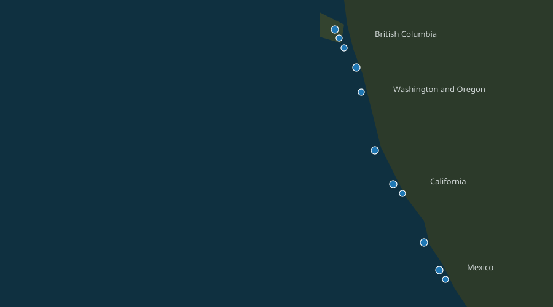

CRC-20417
Humpback Whale (Megaptera novaeangliae)
IDs
- SPLASH
- 41207
- DFO
- BCY0844
- HappyWhale
- 88213
- NPAC
- 3391
- WGRP
- UNAM
- Aliases
- CRC-12043
- Retired IDs
- CRC-11870
Summary
- Sex
- Female (genetic)
- Colour Category
- 4C
- First Seen
- 2009-08-11
- Last Seen
- 2026-09-14
- Sightings
- 37
- Dead
- No
Map

Sightings (37)
| Date | Region | Locality | Contributor | Research Group | Sharing Status | Quality | HappyWhale |
|---|---|---|---|---|---|---|---|
| 2026-09-14 | Washington | Haro Strait | CRC | CRC | Public | 2 | Open |
| 2026-08-02 | Washington | Port Angeles | Salish Wildlife Tours | SWT | Private | 3 | Open |
| 2025-09-20 | British Columbia | Juan de Fuca Strait | Coastal Ocean Watch | COW | Private | 2 | |
| 2025-01-28 | Mexico | Bahia de Banderas | Pacific Fluke Project | PFP | Public | 3 | Open |
| 2024-07-14 | Washington | Haro Strait | CRC | CRC | Blank | 2 |
1–37 of 371
Samples (2)
| Sample | Date | Type | Locality | Genetic Sex |
|---|---|---|---|---|
| MN-S-0931 | 2014-08-19 | Biopsy | Haro Strait | Female |
| MN-S-1407 | 2022-07-06 | Sloughed Skin | Port Angeles | Female |